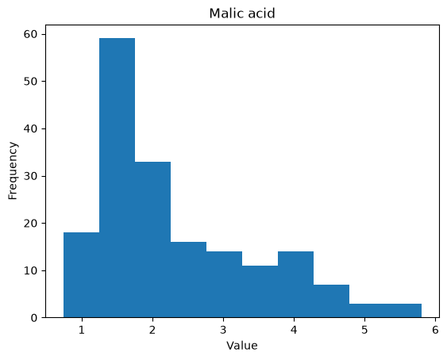
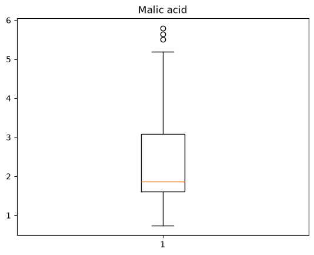
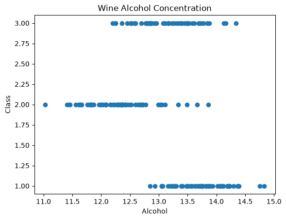
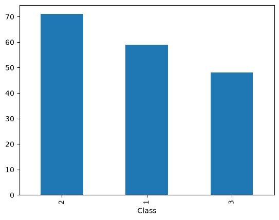

Exploratory Data Analysis#
import pandas as pd
import matplotlib.pyplot as plt
When given a new dataset, there are a lot of questions that can arise immediately. However, exploring the dataset is a good way to formalize these questions and develop more. Here is a laundry list of useful Python functions for this:
# read the data
df = pd.read_csv("wine.csv")
# look at the first few rows
print("Here are the first few rows of the dataset: ")
print(df.head())
# look at the last few rows
print("Here are the last few rows of the dataset: ")
print(df.tail())
# look at the dimensions
print("Here are the number of rows and columns: ")
print(df.shape)
# look at the column names
print("Here are the column names: ")
print(df.columns)
# look at the general information
print("Here is some generic information: ")
print(df.info())
# look at the basic statistical information for each column
print("Here is some basic statistical information: ")
print(df.describe())
Here are the first few rows of the dataset:
Class Alcohol Malic acid Ash Alcalinity of ash Magnesium \
0 1 14.23 1.71 2.43 15.6 127
1 1 13.20 1.78 2.14 11.2 100
2 1 13.16 2.36 2.67 18.6 101
3 1 14.37 1.95 2.50 16.8 113
4 1 13.24 2.59 2.87 21.0 118
Total phenols Flavanoids Nonflavanoid phenols Proanthocyanins \
0 2.80 3.06 0.28 2.29
1 2.65 2.76 0.26 1.28
2 2.80 3.24 0.30 2.81
3 3.85 3.49 0.24 2.18
4 2.80 2.69 0.39 1.82
Color intensity Hue OD280/OD315 of diluted wines Proline
0 5.64 1.04 3.92 1065
1 4.38 1.05 3.40 1050
2 5.68 1.03 3.17 1185
3 7.80 0.86 3.45 1480
4 4.32 1.04 2.93 735
Here are the last few rows of the dataset:
Class Alcohol Malic acid Ash Alcalinity of ash Magnesium \
173 3 13.71 5.65 2.45 20.5 95
174 3 13.40 3.91 2.48 23.0 102
175 3 13.27 4.28 2.26 20.0 120
176 3 13.17 2.59 2.37 20.0 120
177 3 14.13 4.10 2.74 24.5 96
Total phenols Flavanoids Nonflavanoid phenols Proanthocyanins \
173 1.68 0.61 0.52 1.06
174 1.80 0.75 0.43 1.41
175 1.59 0.69 0.43 1.35
176 1.65 0.68 0.53 1.46
177 2.05 0.76 0.56 1.35
Color intensity Hue OD280/OD315 of diluted wines Proline
173 7.7 0.64 1.74 740
174 7.3 0.70 1.56 750
175 10.2 0.59 1.56 835
176 9.3 0.60 1.62 840
177 9.2 0.61 1.60 560
Here are the number of rows and columns:
(178, 14)
Here are the column names:
Index(['Class', 'Alcohol', 'Malic acid', 'Ash', 'Alcalinity of ash',
'Magnesium', 'Total phenols', 'Flavanoids', 'Nonflavanoid phenols',
'Proanthocyanins', 'Color intensity', 'Hue',
'OD280/OD315 of diluted wines', 'Proline'],
dtype='str')
Here is some generic information:
<class 'pandas.DataFrame'>
RangeIndex: 178 entries, 0 to 177
Data columns (total 14 columns):
# Column Non-Null Count Dtype
--- ------ -------------- -----
0 Class 178 non-null int64
1 Alcohol 178 non-null float64
2 Malic acid 178 non-null float64
3 Ash 178 non-null float64
4 Alcalinity of ash 178 non-null float64
5 Magnesium 178 non-null int64
6 Total phenols 178 non-null float64
7 Flavanoids 178 non-null float64
8 Nonflavanoid phenols 178 non-null float64
9 Proanthocyanins 178 non-null float64
10 Color intensity 178 non-null float64
11 Hue 178 non-null float64
12 OD280/OD315 of diluted wines 178 non-null float64
13 Proline 178 non-null int64
dtypes: float64(11), int64(3)
memory usage: 19.6 KB
None
Here is some basic statistical information:
Class Alcohol Malic acid Ash Alcalinity of ash \
count 178.000000 178.000000 178.000000 178.000000 178.000000
mean 1.938202 13.000618 2.336348 2.366517 19.494944
std 0.775035 0.811827 1.117146 0.274344 3.339564
min 1.000000 11.030000 0.740000 1.360000 10.600000
25% 1.000000 12.362500 1.602500 2.210000 17.200000
50% 2.000000 13.050000 1.865000 2.360000 19.500000
75% 3.000000 13.677500 3.082500 2.557500 21.500000
max 3.000000 14.830000 5.800000 3.230000 30.000000
Magnesium Total phenols Flavanoids Nonflavanoid phenols \
count 178.000000 178.000000 178.000000 178.000000
mean 99.741573 2.295112 2.029270 0.361854
std 14.282484 0.625851 0.998859 0.124453
min 70.000000 0.980000 0.340000 0.130000
25% 88.000000 1.742500 1.205000 0.270000
50% 98.000000 2.355000 2.135000 0.340000
75% 107.000000 2.800000 2.875000 0.437500
max 162.000000 3.880000 5.080000 0.660000
Proanthocyanins Color intensity Hue \
count 178.000000 178.000000 178.000000
mean 1.590899 5.058090 0.957449
std 0.572359 2.318286 0.228572
min 0.410000 1.280000 0.480000
25% 1.250000 3.220000 0.782500
50% 1.555000 4.690000 0.965000
75% 1.950000 6.200000 1.120000
max 3.580000 13.000000 1.710000
OD280/OD315 of diluted wines Proline
count 178.000000 178.000000
mean 2.611685 746.893258
std 0.709990 314.907474
min 1.270000 278.000000
25% 1.937500 500.500000
50% 2.780000 673.500000
75% 3.170000 985.000000
max 4.000000 1680.000000
We can ask questions of centering for the data:
# average
print("Here is the mean for each column: ")
print(df.mean(numeric_only=True))
# middle value
print("Here is the median for each column: ")
print(df.median(numeric_only=True))
# most common value
print("Here is the mode for each column: ")
print(df.mode())
Here is the mean for each column:
Class 1.938202
Alcohol 13.000618
Malic acid 2.336348
Ash 2.366517
Alcalinity of ash 19.494944
Magnesium 99.741573
Total phenols 2.295112
Flavanoids 2.029270
Nonflavanoid phenols 0.361854
Proanthocyanins 1.590899
Color intensity 5.058090
Hue 0.957449
OD280/OD315 of diluted wines 2.611685
Proline 746.893258
dtype: float64
Here is the median for each column:
Class 2.000
Alcohol 13.050
Malic acid 1.865
Ash 2.360
Alcalinity of ash 19.500
Magnesium 98.000
Total phenols 2.355
Flavanoids 2.135
Nonflavanoid phenols 0.340
Proanthocyanins 1.555
Color intensity 4.690
Hue 0.965
OD280/OD315 of diluted wines 2.780
Proline 673.500
dtype: float64
Here is the mode for each column:
Class Alcohol Malic acid Ash Alcalinity of ash Magnesium \
0 2.0 12.37 1.73 2.28 20.0 88.0
1 NaN 13.05 NaN 2.30 NaN NaN
2 NaN NaN NaN NaN NaN NaN
Total phenols Flavanoids Nonflavanoid phenols Proanthocyanins \
0 2.2 2.65 0.26 1.35
1 NaN NaN 0.43 NaN
2 NaN NaN NaN NaN
Color intensity Hue OD280/OD315 of diluted wines Proline
0 2.6 1.04 2.87 520.0
1 3.8 NaN NaN 680.0
2 4.6 NaN NaN NaN
We can also ask questions of spread for the data:
# standard deviation
print("The standard deviation of each column: ")
print(df.std(numeric_only=True))
# variance
print("The variance of each column: ")
print(df.var(numeric_only=True))
The standard deviation of each column:
Class 0.775035
Alcohol 0.811827
Malic acid 1.117146
Ash 0.274344
Alcalinity of ash 3.339564
Magnesium 14.282484
Total phenols 0.625851
Flavanoids 0.998859
Nonflavanoid phenols 0.124453
Proanthocyanins 0.572359
Color intensity 2.318286
Hue 0.228572
OD280/OD315 of diluted wines 0.709990
Proline 314.907474
dtype: float64
The variance of each column:
Class 0.600679
Alcohol 0.659062
Malic acid 1.248015
Ash 0.075265
Alcalinity of ash 11.152686
Magnesium 203.989335
Total phenols 0.391690
Flavanoids 0.997719
Nonflavanoid phenols 0.015489
Proanthocyanins 0.327595
Color intensity 5.374449
Hue 0.052245
OD280/OD315 of diluted wines 0.504086
Proline 99166.717355
dtype: float64
A typical problem with data is cleanliness. That is, a lot of datasets have human error! There can be repeat rows, non-number values when there should be, and more. We can check these easily in Python:
# check to see how many non-numbers are present:
print(df.isnull().sum())
# check to see how many duplicate rows are present:
print(df.duplicated().sum())
df = df.drop_duplicates() # removes the duplicates
Class 0
Alcohol 0
Malic acid 0
Ash 0
Alcalinity of ash 0
Magnesium 0
Total phenols 0
Flavanoids 0
Nonflavanoid phenols 0
Proanthocyanins 0
Color intensity 0
Hue 0
OD280/OD315 of diluted wines 0
Proline 0
dtype: int64
0
Last but not least, we want to actually see the data. One of the keys to understanding our dataset.
# histogram
plt.hist(df["Malic acid"])
plt.title("Malic acid")
plt.xlabel("Value")
plt.ylabel("Frequency")
plt.show()
# boxplot
plt.boxplot(df["Malic acid"])
plt.title("Malic acid")
plt.show()
# scatter plot
plt.scatter(df["Alcohol"], df["Class"])
plt.xlabel("Alcohol")
plt.ylabel("Class")
plt.title("Wine Alcohol Concentration")
plt.show()
# bar chart
df["Class"].value_counts().plot(kind="bar")
plt.show()




Generally useful functions:
df.head()
df.tail()
df.info()
df.describe()
df.shape
df.columns
df.isnull().sum()
df.duplicated().sum()
df.corr(numeric_only=True)
df.value_counts()
Useful plotting functions:
plt.hist()
plt.scatter()
plt.bar()
plt.boxplot()
df.plot()
where df is a pandas.DataFrame object and plt is the matplotlib.pyplot library
Lab Problems#
Some useful random number generation tools for lab:
# uniformly at random from 0 to 1
np.random.uniform(0,1)
np.random.uniform(0, 1, size=10)
---------------------------------------------------------------------------
NameError Traceback (most recent call last)
Cell In[19], line 3
1 # uniformly at random from 0 to 1
2
----> 3 np.random.uniform(0,1)
4 np.random.uniform(0, 1, size=10)
NameError: name 'np' is not defined
For all random generators, go here: numpy link.
a. Generate a data set of size 300 using np.random
b. Save this data set as a pandas dataframe
c. Download the dataset as a csv using dataframe_name.to_csv("file_name.csv", index=False)
There are many ways to calculate what a data set is centered around. A few examples you have seen:
Mean - The average of a dataset (\(\bar{x}=\frac{1}{n}\sum\limits_{i=1}^nx_i\) for data points \(x_i\))
Median - The “middle data point” (average of 2 middle data points if data size is even-sized)
Mode - The most common value (value with most number of occurences in data set)
a. Write your own function that calculate each of these.
b. Read the csv from Problem 1 into your notebook using pd.read_csv("file_name.csv")
c. Plot a histogram of the data and use plt.axvline() to plot vertical lines for the mean, median, and mode on the same histogram.
d. Do you notice anything about the mean, median, and mode? How can you explain this behavior?
We don’t care solely where the data is centered, but also how spread out the data is around that center. Some ways we can measure this:
Mean Absolute Deviation - Average of distance to the mean (\(MAD(x)= \frac{1}{n}\sum\limits_{i=1}^n|x_i-\bar{x}|\))
Variance - Average squared distance to the mean (\(Var(x)=\frac{1}{n}\sum\limits_{i=1}^n(x_i-\bar{x})^2\))
Standard Deviation - Square root of average squared distance to the mean (\(s(x)=\sqrt{\frac{1}{n}\sum\limits_{i=1}^n(x_i-\bar{x})^2}\))
where \(x\) is the entire dataset, \(x_i\) is a data point, and \(\bar{x}\) is the mean of the dataset.
a. Write your own function that calculate each of these.
b. Plot a histogram of the data and use plt.axvline(mean + variance) and plt.axvline(mean-variance) to plot vertical lines for variance on the same histogram. Do the same with adding and subtracting mean absolute deviation and standard deviation.
c. Do you notice anything about lines corresponding to the different definitions variability? How can you explain this behavior?
Choose one of the following datasets on GitHub:
Iris Dataset
Titanic Dataset
a. Load the dataset into a Pandas DataFrame.
b. Display the first five rows.
c. Display the last five rows.
d. How many rows are in the dataset?
e. How many columns are in the dataset?
f. What are the column names?
g. What data type is each column?
h. Are there any missing values?
i. Are there any duplicate rows?
j. For each numerical column, compute the following:
Mean
Median
Mode
Minimum
Maximum
Standard deviation
k. Which variable has the greatest variation?
l. Which variable has the smallest variation?
m. Choose a numerical column from your dataset and:
Plot the corresponding histogram.
What does the distribution look like?
Is it symmetric or skewed?
Plot the corresponding box plot.
Are there any outliers?
Explain what you observe.
n. Choose one categorical column from your dataset and:
Plot the corresponding bar chart.
Which category occurs most frequently?
Which occurs least frequently?